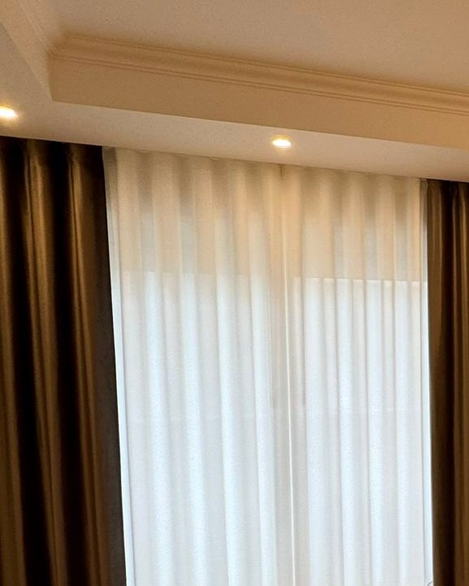
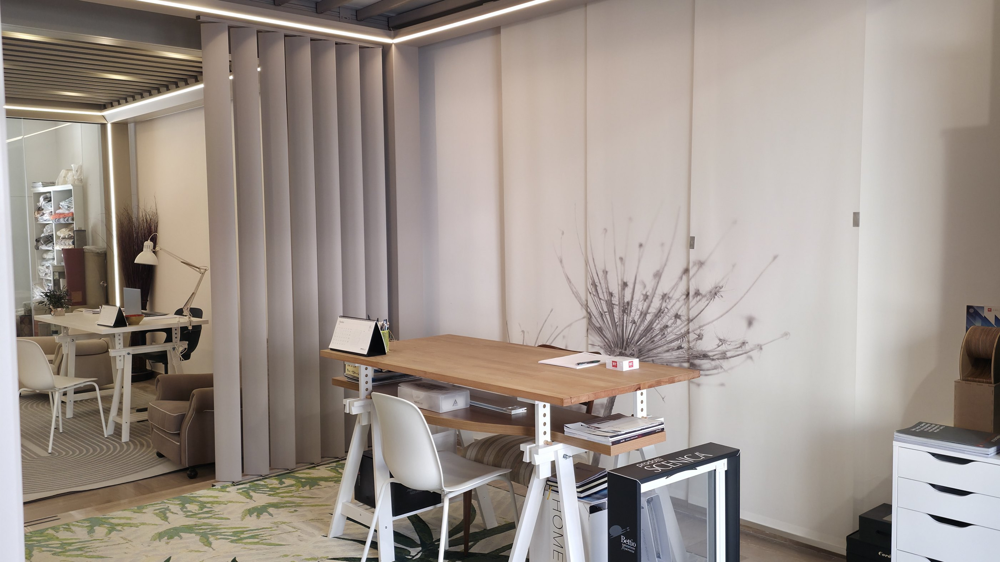
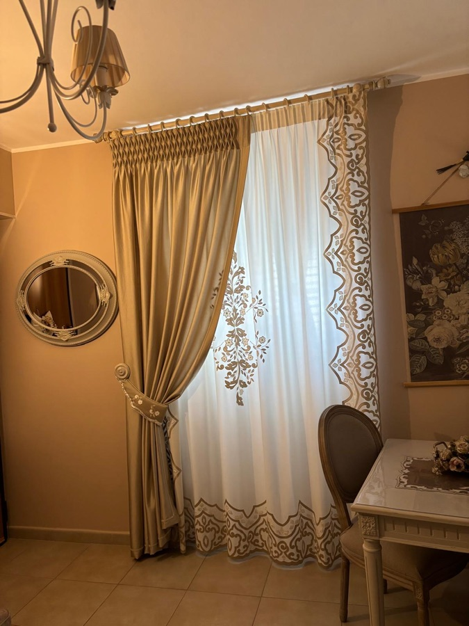
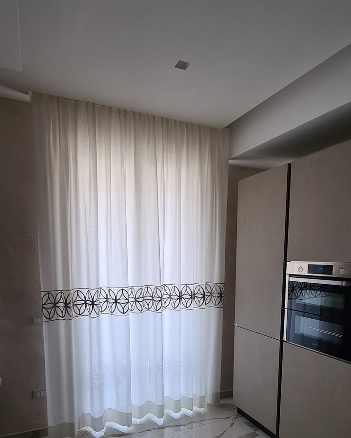
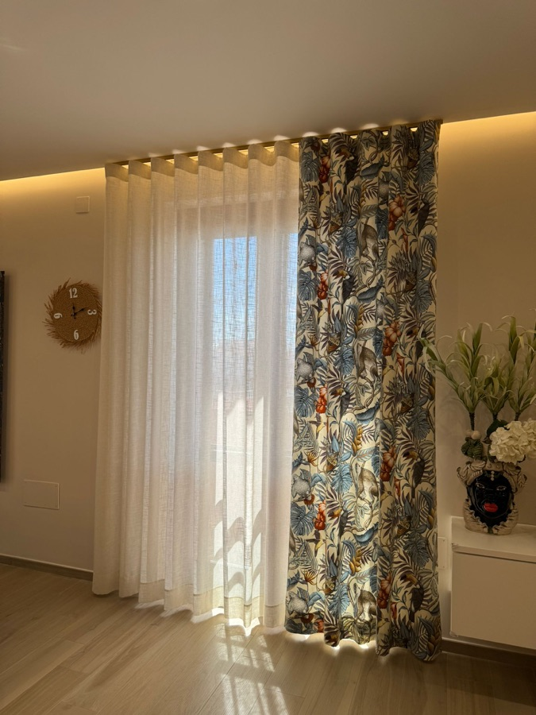
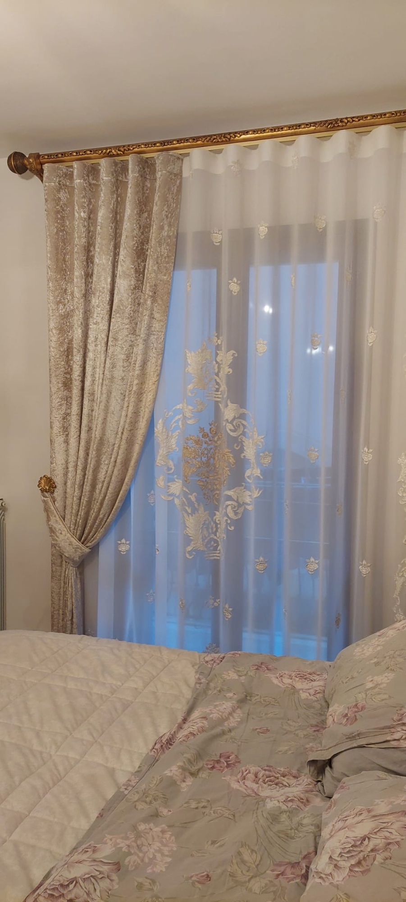
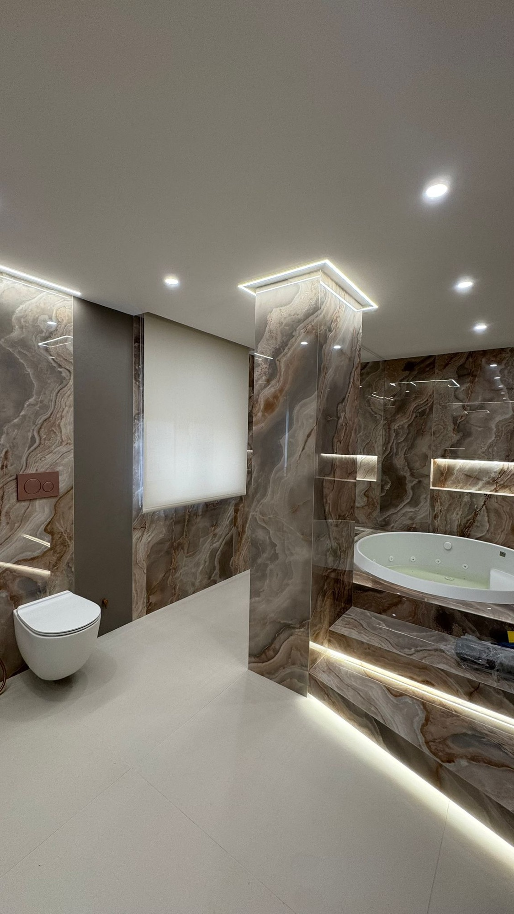

A onda
Pieghe morbide e regolari su binario, perfette con i controsoffitti e le luci a LED.

Tendaggi d'arredo e tende tecniche pensati per la tua stanza: tessuti, binari e finiture scelti insieme, confezionati e montati da noi.
Dal tendaggio classico con drappeggio alla tenda a onda su binario, fino ai tessuti ricamati e alle fantasie.

Pieghe morbide e regolari su binario, perfette con i controsoffitti e le luci a LED.

Drappeggi, mantovane, fermatende e bastoni decorati per ambienti in stile.

Tessuti leggeri con ricami e decori che filtrano la luce e danno carattere.

Stampe, geometrie e colori decisi, abbinati a una tenda leggera.

Ogni tenda nasce dalle misure prese a casa tua: altezza, larghezza, tipo di binario o bastone, quantità di tessuto per la piega giusta.
Poi la montiamo, la sistemiamo e la regoliamo finché cade come deve.

Tende a rulloDove serve praticità, le tende a rullo regolano luce e privacy con un gesto. Teli filtranti o oscuranti, facili da pulire, anche in stanze con poco spazio.
Veniamo a vedere luce, colori e arredi della stanza.
Scegli i tessuti toccandoli, con la tua luce.
Le prendiamo noi, al centimetro.
Tende pronte, montate e regolate.